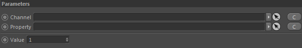
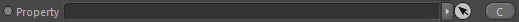
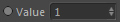

Parameters
Parameters

Channel

Takes a Grid Channel as input (which can be extracted by other nodes as a target channel)
Property

Takes a Particle Property to use with the linked Channel.
Example POP::PointData To Grid (P2G):
The P2G reads the Property link field and asks the particles if they carry this property. If they do the particle will return the value of this property and P2G will write this value into the defined channel grid.
The P2G reads the Property link field and asks the particles if they carry this property. If they do the particle will return the value of this property and P2G will write this value into the defined channel grid.
Value

Used if no Property is linked. That way you can directly link a value to the defined Channel.
This value is also used as default value when a Property is linked but the particles do not contain such a property.